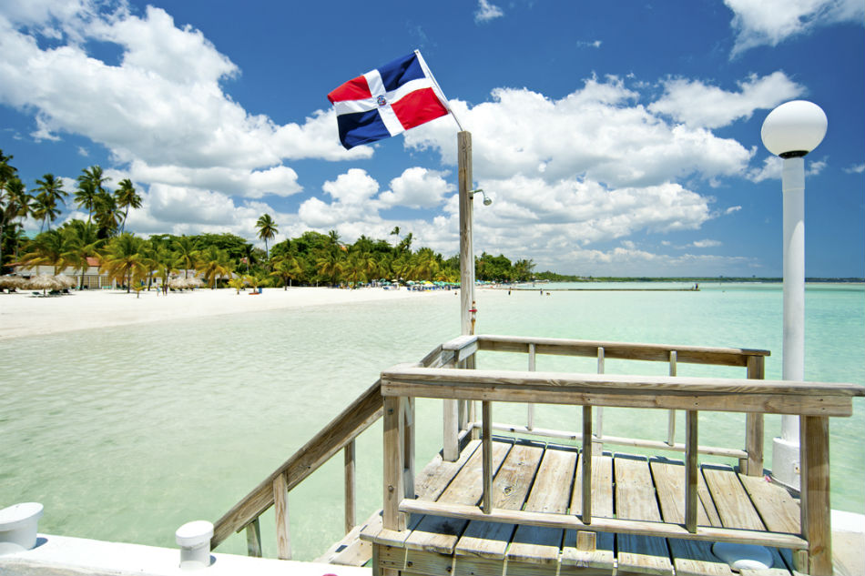
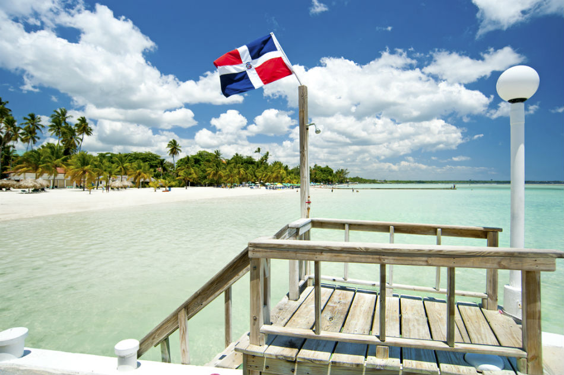

Introducción
En esta segunda entrada, quiero compartir mis experiencias viajando a dos hermosos destinos: Costa Rica y República Dominicana. Estos viajes fueron realmente inolvidables, y quiero destacar algunos aspectos como el clima, la amabilidad de la gente y las impresionantes playas que encontré en cada lugar.
Costa Rica: Naturaleza y Clima Tropical
Costa Rica es conocida por su increíble biodiversidad y su clima tropical que parece ser perfecto casi todo el año. Durante mi visita, pude disfrutar de un clima cálido, con temperaturas que rondaban los 25-30°C, ideal para explorar sus parques naturales y playas.
Lo que más me sorprendió de Costa Rica fue la amabilidad de su gente. Cada persona que conocí fue extremadamente acogedora, siempre dispuesta a ayudar y a compartir recomendaciones sobre los mejores lugares para visitar. Además, la frase "Pura Vida" define perfectamente la actitud relajada y positiva de los costarricenses.
Las playas en Costa Rica fueron otro gran atractivo. Tuve la oportunidad de visitar la playa de Manuel Antonio, con arena blanca y aguas cristalinas rodeadas de frondosa vegetación. Fue una experiencia que realmente me conectó con la naturaleza.
República Dominicana: Playas Paradisíacas y Cultura Cálida
República Dominicana también fue un destino que me dejó sin palabras. Lo primero que noté fue el calor humano de la gente. Los dominicanos son muy hospitalarios y siempre están dispuestos a compartir su cultura, su música y su comida con una gran sonrisa.
En cuanto al clima, es muy similar al de Costa Rica: tropical, cálido y con un sol que invita a disfrutar de la playa. Las temperaturas durante mi estancia también rondaban los 30°C, perfectas para unas vacaciones relajantes.
Las playas de Punta Cana fueron simplemente espectaculares, con arena fina y blanca y un mar turquesa increíblemente claro. Pasé varios días disfrutando del sol y del mar, y fue realmente el lugar perfecto para desconectar del mundo y relajarme por completo.
 

Reflexiones Finales
Ambos destinos me dejaron maravillado. Tanto Costa Rica como República Dominicana ofrecen una combinación perfecta de naturaleza, buen clima, gente acogedora y playas paradisíacas. Cada lugar tiene su encanto único, y no dudaría en regresar para seguir explorando todo lo que tienen para ofrecer.